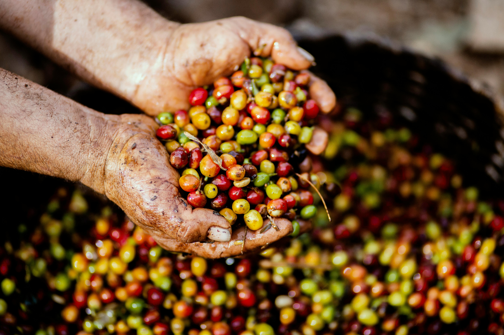
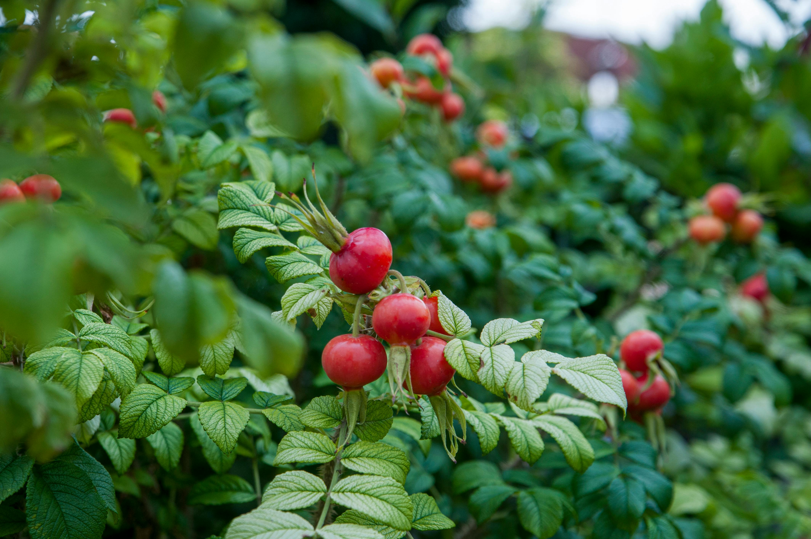
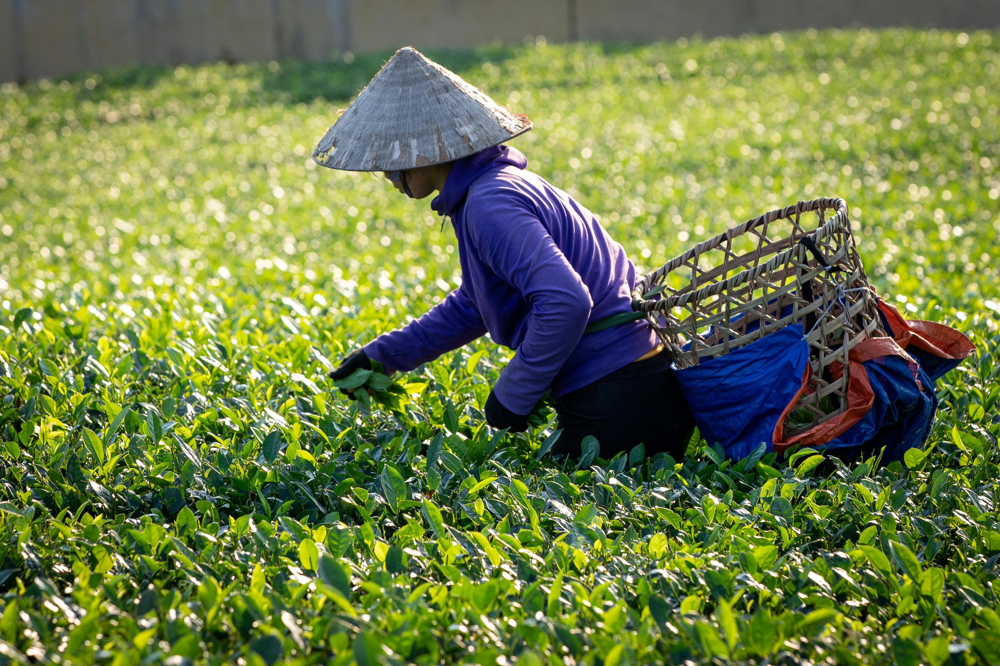

March 2026 · Guide
Five ways to cut kitchen plastic this week
Small swaps that add up—storage, shopping bags, and cleaning without single-use bottles.
Eco-living guides, behind-the-scenes from our projects, and practical ideas for lower-impact daily habits.

March 2026 · Guide
Small swaps that add up—storage, shopping bags, and cleaning without single-use bottles.

February 2026 · Field notes
How partners choose species, protect saplings, and measure survival rates over time.

January 2026 · Impact
Waste categories, local partnerships, and what we’re funding next.

December 2025 · How we work
Checklists for labor, chemicals, water use, and packaging before a product hits the shop.

November 2025 · Community
Why we weigh and sort waste—and how volunteers help shape local policy asks.
October 2025 · Lifestyle
Bokashi, worm bins, and municipal options—pick what fits your space.
More articles are added regularly. Subscribe to get new posts by email.